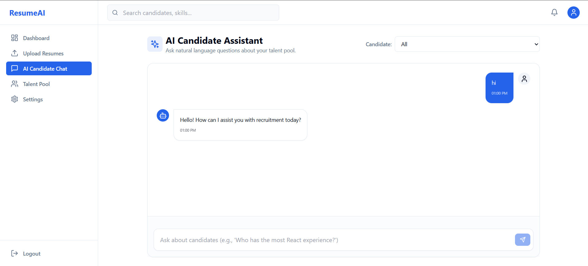

RAG Based Projects
Retrieval-Augmented Generation & Generative AI

- Objective: Developed an interactive Retrieval-Augmented Generation (RAG) chatbot designed to parse resumes and answer recruitment queries dynamically in real-time.
- Technology: Built with LangChain, ChromaDB/FAISS vector databases, OpenAI GPT models (or open-source alternatives), with a React frontend and Flask backend framework.
- Implementation: Embedded resume text chunks using specialized sentence-transformer models, indexed them for semantic similarity search, and constructed conversational search chains with memory.
- Applications: Serves as an autonomous recruitment agent on digital portfolios, enabling hiring managers to query qualifications, skills, and background details instantly.
Skills: Python, Large Language Models (LLMs), Vector DB, RAG Pipelines, API Integration
Libraries and Frameworks Used: LangChain, ChromaDB, OpenAI API, Flask, React, PyPDF